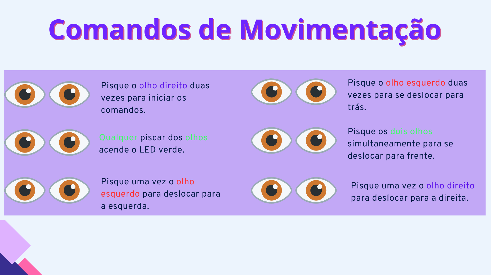

O que foi utilizado
Descrição
ㅤㅤO alcance da mobilidade autônoma para indivíduos com deficiências motoras requer uma abordagem meticulosa e inovadora. A metodologia aplicada levou em conta sólidos princípios de engenharia, onde emissores e receptores de luz infravermelha são estrategicamente integrados a um óculos para interpretar o piscar dos olhos como comandos elétricos mensuráveis. Com ênfase em testes rigorosos e prototipagem iterativa, a engenharia eletrônica se entrelaça com a programação do microcontrolador PIC24 para direcionar os motores e possibilitar movimentos coordenados. Este processo dinâmico e centrado em técnicas de engenharia forma a base sólida desta jornada, impulsionando a criação de um sistema de mobilidade inovador e acessível.
Sistema de Sensores Infravermelhos Presos num Óculos
Para captar o piscar dos olhos e transformá-lo em comandos utilizáveis, foi implementado um sistema de sensores infravermelhos presos em um óculos. Inicialmente, explorou-se o uso de emissores e receptores de luz infravermelha para gerar comandos simples em circuitos elétricos. O barramento do sinal, representando o piscar dos olhos, foi crucial para desencadear respostas específicas.
Figura 4: LEDs infravermelhos
Fonte: De autoria própria
Sistema de Carga e Indicação de Carga da Bateria
Visando tornar o sistema portátil e recarregável, baterias de lítio foram utilizadas. Desenvolveu-se um sistema de carga que assegura a recarga eficiente e uma indicação de nível de bateria para informar o usuário sobre o estado da alimentação dos motores. Isso envolveu testes práticos e ajustes para otimizar a eficácia e a durabilidade das baterias para o carrinho. Além disso, implementou-se um módulo que permite a proteção das baterias contra a sobrecarga
Figura 5: Sistema de carga e indicação da bateria
Fonte: De autoria própria
Programação em Linguagem C para o Microcontrolador PIC24
A lógica de movimentação do carrinho conforme o piscar dos olhos foi traduzida por meio de programação em linguagem C, implementada no microcontrolador PIC24. Este componente central desempenha um papel vital na interpretação dos sinais infravermelhos captados pelos sensores, gerando comandos para uma ponte H dupla. Os motores, controlados por esta ponte H, respondem aos comandos, permitindo que o carrinho se mova nas direções cardinais de acordo com os piscar dos olhos. Aplicativos de simulação de esquemas elétricos foram empregados para analisar e aprimorar cada componente do sistema, assegurando uma integração eficiente e precisa.
Figura 6: Construção no software para criação de projetos eletrônicos
Fonte: Proteus
Os comandos

Figura 7: Comandos realizados pelo piscar dos olhos
Fonte: De autoria própria